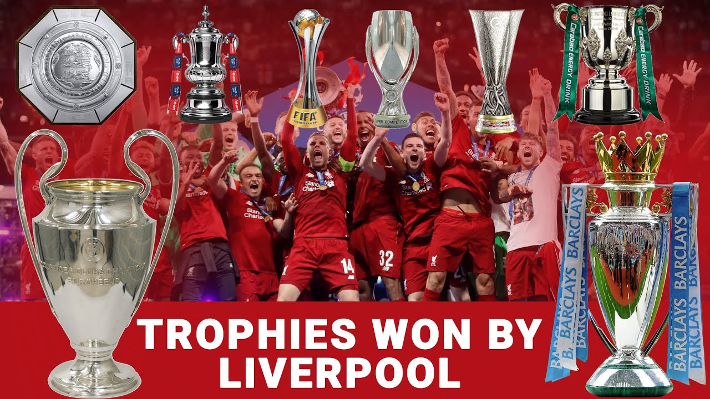

Trophies Won by Liverpool FC

Throughout their long and glorious history, Liverpool FC has established itself as one of the most decorated football clubs in the world. Here’s a look at their major trophies:
- 6x UEFA Champions League: Liverpool have conquered Europe six times, with their most famous victory being the comeback win in Istanbul 2005.
- 19x English League Titles: The Reds have won the English top-flight title 19 times, their most recent triumph coming in the 2019/20 season.
- 8x FA Cup: A prestigious tournament in English football, Liverpool have lifted the FA Cup eight times, most recently in 2022.
- 10x EFL Cup: The Reds hold the record for the most League Cup wins, showcasing their dominance in domestic cup competitions.
- 4x UEFA Super Cup: Winning the UEFA Super Cup multiple times proves their ability to perform against the best in Europe.
- 16x Community Shield: A traditional curtain-raiser to the English season, Liverpool have won the Community Shield numerous times.
- 3x UEFA Europa League: Liverpool have also found success in the second-tier European competition, lifting the trophy three times.
- 1x FIFA Club World Cup: Liverpool cemented their global dominance by winning the FIFA Club World Cup in 2019.
Liverpool FC’s storied history is built on legendary players, unforgettable matches, and a passionate fan base. Their pursuit of glory continues as they aim to add even more silverware to their impressive collection.
